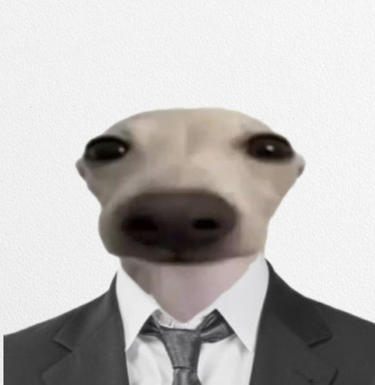

Cidade dos Caẽs, CC| email: cachorrodeterno@hotmail.com | tel. (11)5 2525-2525 | linkedin: linkedin.com/in/cachorrodeterno/

Especialista em Degustação de Ração Animal
Profissional altamente focado e motivado, com paladar refinado e anos de experiência em experiências sensoriais caninas. Busco oportunidade para aplicar minha expertise em controle de qualidade, análise de textura e validação de aroma em uma indústria de alimentos para animais de estimação que valorize a excelência nutricional e o sabor inigualável. Objetivo: garantir que cada grão de ração proporcione uma experiência gastronômica digna de um "bom garoto".
Qualificações Chave
Paladar Altamente Treinado: Capacidade excepcional de distinguir nuances sutis em diferentes tipos de proteínas, vegetais e suplementos em rações.
Foco e Determinação: Persistência inigualável em alcançar objetivos, como demonstrado na minha carreira anterior de rastreamento.
Trabalho sob Pressão: Mantenho a compostura e o foco mesmo em ambientes agitados ou com distrações (como outros pets).
Análise Comportamental: Percepção aguçada de reações e preferências de outros cães, útil para testes de aceitação de mercado.
Comunicação Eficaz: Uso de sinais corporais claros e vocais quando necessário para feedback imediato sobre a qualidade do produto.
Detetive Particular para Animais de Estimação (Pet Detective)
Empresa: Faro Fino Investigações (Autônomo) – 04/2026 - Atualmente
Rastreamento e Recuperação: Especialista em localizar animais perdidos (cachorros, gatos e até hamsters fugitivos) usando olfato apurado e análise de pegadas.
Investigação de Desaparecimentos: Coleta e análise de pistas olfativas e visuais para desvendar mistérios do mundo pet.
Negociação Sensível: Habilidade em se aproximar de animais assustados ou agressivos com empatia e autoridade calma.
Relatórios Detalhados: Apresentação de descobertas de forma clara e objetiva para os tutores aliviados.
Coletor Profissional de Bolas de Golfe
Empresa: Green Valley Golf Club (Cidade dos Pets) – 09/2002-07/2013
Recuperação Eficiente: Localização e recuperação de bolas de golfe perdidas em roughs, bunkers e até em lagos (sim, sei nadar!), com mínima perturbação para os jogadores.
Trabalho em Equipe: Coordenação com a equipe do clube para garantir a limpeza e segurança do campo.
Foco Impecável: Capacidade de ignorar esquilos e outros cães enquanto em serviço.
Manutenção preventida: Inspeção e limpeza básica das bolas recuperadas.
Treinamento Avançado em Obediência e Disciplina:
Certificado de Excelência (Nota máxima em "Fica" e "Busca"). Escola de Adestramento "Bons Cães", Cidade dos Pets.
Curso de Especialização em Análise Sensorial Canina: "O Olfato e o Paladar: Do Aroma ao Estômago"
Instituto de Estudos de Pets, Cidade dos Pets.Latido: Fluente em todas as tonalidades (alegria, alerta, urgência).
Uivo: Proficiente para comunicações à longa distância.
Comunicação Não Verbal: Especialista em leitura de linguagem corporal canina e humana.
Portfólio Visível: Minha cara de sério e meu terno impecável são provas da minha dedicação e profissionalismo.
Disponibilidade: Flexível para horários de degustação, com prioridade para turnos que coincidam com refeições humanas (para fins de pesquisa, claro).
Alergias: Nenhuma conhecida (com exceção de gatos... mas eu me controlo).